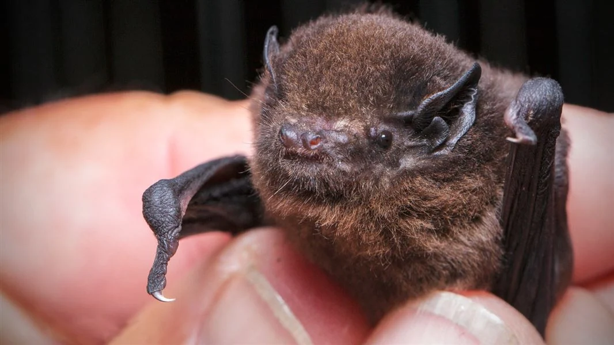

Rows: 40
Columns: 5
$ bird <chr> "Pekapeka-tou-roa / Long-tailed bat", "Kākāpō", "Titipouna…
$ votes <dbl> 2894, 3351, 1852, 1594, 1468, 1228, 1302, 1260, 1184, 1477…
$ year <dbl> 2021, 2021, 2021, 2021, 2021, 2021, 2021, 2021, 2021, 2021…
$ rank_number <dbl> 1, 2, 3, 4, 5, 6, 7, 8, 9, 10, 1, 2, 3, 4, 5, 6, 7, 8, 9, …
$ maori_name <chr> "Pekapeka-tou-roa", "Kākāpō", "Titipounamu", "Kea", "Toroa…day 17_birds
It is Day 17 and the theme is birds. I am interested in the results of the Forest and Bird New Zealand Bird of the Year competition over the past few years.
On Wikipedia I found tables of the 2022-2024 results but I had to get the 2021 data from the press release.
The datapasta package from Miles McBain makes copying and pasting data from the wild into RStudio really easy. The cleaning required was a bit unwieldy though, so this separate .R script gets the data in for each year, combines it into a single dataframe and fixes all the annoying inconsistencies in bird naming across years, before writing it to csv.
load packages/read data
plot ranking
This is rank data so I am trying ggbump()again.

Controversy
The ranking data is interesting but it hides a number of controversies that have plagued the Bird of the year competition in recent years.
2021: not even a bird

The Long-tailed bat (Pekapeka-tou-roa) is New Zealand’s only native land mammal and caused a bit of a stir when it was voted as New Zealand’s favourite bird in 2021.

2022: Rock Wren beats the Little Penguin

The results in 2022 were more typical. While the Little Penguin / Kororā technically received the most #1 votes, it was pipped at the post by the New Zealand Rock Wren / Pīwauwau, a tiny alpine bird that lives in the mountains of the South Island.

2023: Pūteketeke pandemonium

Forest and Bird were celebrating their 100 year anniversary in 2023, so dubbed the competition “Bird of the Century” that year. This may have been what attracted international attention and the subsequent pandemonium.
The Australasian crested grebe / Pūteketeke received almost 300K votes due to a campaign launched by British/American comedian and late night show host John Oliver.
The campaign, described as “alarmingly aggressive” by some, involved placing billboards across the world, from Wellington NZ…
… to Manitowoc WI.

John even appeared on the Jimmy Fallon show wearing a Pūteketeke costume.
The result of the campaign was a resounding win for the Pūteketeke and an impressive boost in competition interest and donations to Forest and Bird.

2024: Yellow-eyed Penguin